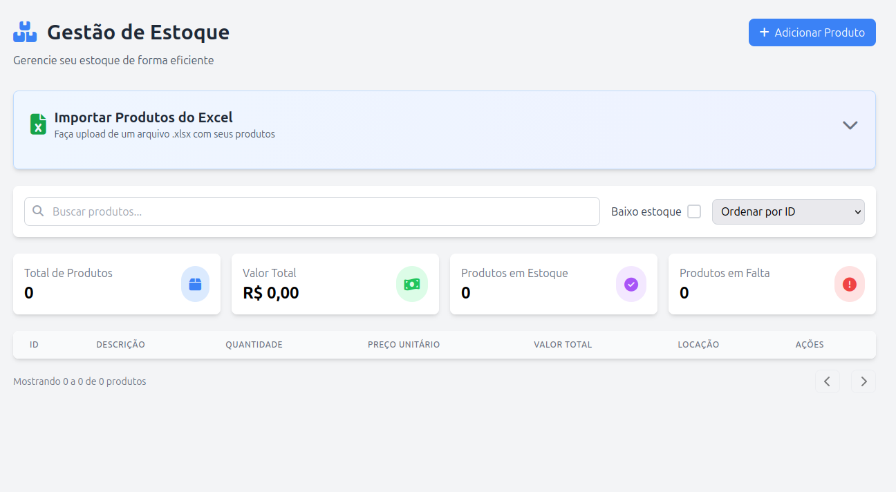

Meus projetos
Sistema de Restaurante
sistema de gerenciamento para restaurantes, desenvolvido para otimizar o fluxo de trabalho, desde o registro de pratos e mesas até o controle de pedidos e gestão de usuários. A aplicação foi construída utilizando a arquitetura de microserviços/monolítica (escolha a que se aplica) com Spring Boot, garantindo uma API robusta e escalável, e MySQL como banco de dados para persistência dos dados..
 Ver projeto
Ver projeto
Sistema de Biblioteca
sistema web para gestão de biblioteca — cadastro de livros, usuários, empréstimos, devoluções ou funcionalidades conforme o escopo do projeto. O objetivo é aplicar e demonstrar práticas de desenvolvimento web (frontend + backend) utilizando tecnologias modernas, além de servir como portfólio de projeto acadêmico/profissional.
Ver projeto
Sistema de Gerenciamento de Produtos
Sistema web para gerenciamento de produtos com importação de dados via Excel (XLSX). Tecnologias usadas: Java, Spring Boot, MySQL, HTML, CSS, JavaScript e MySQL.

Ver projetoSistema de Real Car & Service
Sistema web para apresentação dos serviços oferecidos pela empresa Real Car Service. O cliente pode entrar em contato com o setor administrativo por email, whatsapp ou através de um formulário de contato. Tecnologias usadas: Java, Spring Boot, MySQL, HTML, CSS, JavaScript e MySQL.
 Ver projeto
Ver projeto